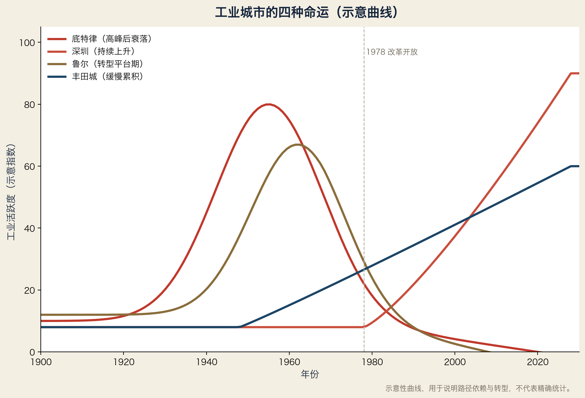

规律要用案例检验。本章讲八个城市/地区的起落。
2.1 底特律：单产业城市的经典教训
起点：19 世纪造船与马车
高峰：20 世纪中叶，全球汽车之都，三大巨头总部
转折：1970 年代石油危机 + 日本车冲击 + 自动化外包
现状：人口从约 180 万（1950）降到约 63 万（2020 年代）；市中心部分荒废
启示：单产业 + 集群不更新 = 城市跟着企业沉没
2.2 鲁尔：煤钢转型的“一半成功”
起点：19 世纪煤炭与钢铁
高峰：1950–60 年代，欧洲工业心脏
转折：煤炭进口竞争 + 钢铁全球化
现状：煤钢大幅萎缩，但转型出物流、能源、大学、文化（埃森红点设计、关税同盟矿区）
启示：转型需要 30–50 年，且不能只靠政府补贴
2.3 谢菲尔德：钢铁之城的萎缩
起点：中世纪刀具与钢铁
高峰：19–20 世纪特种钢中心
转折：钢铁国有化与全球化竞争
现状：钢铁大幅萎缩，转向医疗、教育、航空材料
启示：产业区可以萎缩但不消失；关键是找到“下一块钢”
2.4 萨克森（德累斯顿）：被抹掉又重画的地图
起点：19 世纪德国精密机械与光学（蔡司发源地在耶拿）
二战：德累斯顿被轰炸
东德：半导体工业（卡尔·蔡司/微电子联合企业）
1990：两德统一后工厂关闭，地图几乎清零
现在：Infineon、GlobalFoundries、Bosch、TSMC 建厂 → 欧洲芯片中心
启示：历史可以被中断，但只要人才与位置还在，地图可以重画
2.5 硅谷：制度把偶然变成必然
起点：1950 年代斯坦福工业园 + 军工订单
高峰：半导体 → PC → 互联网 → AI
现状：全球技术资本与人才的“引力中心”
启示：大学 + 风险资本 + 移民 + 允许失败的文化，四者缺一不可
2.6 深圳：从代工到定义者
1980：特区，香港代工
1990：电子组装
2000：华为、比亚迪、大疆自主品牌
2010：新能源与机器人
2020：AI 与具身智能
启示：市场驱动 + 政策配套 + 允许试错 = 最快的集群演化
2.7 丰田城：一个企业定义一个地区
起点：1930 年代丰田自动织机 → 汽车
高峰：丰田生产方式（TPS）成为全球工业标准
现状：丰田、电装、爱信形成“供应商村”
启示：一个世界级企业可以养活一个地区，但也让地区高度依赖
2.8 艾米利亚-罗马涅：中小企业的集群典范
地点：意大利北部（博洛尼亚、摩德纳、帕尔马）
产业：包装机械、陶瓷机械、跑车（法拉利、兰博基尼）
特征：中小企业网络 + 行业协会 + 本地信任
启示：不是只有巨头才能定义工业地图
2.9 案例对比表
| 城市/地区 | 原产业 | 结局 | 核心变量 |
|---|---|---|---|
| 底特律 | 汽车 | 衰落 | 集群未更新 |
| 鲁尔 | 煤钢 | 转型一半 | 时间+多元化 |
| 谢菲尔德 | 钢铁 | 萎缩 | 全球化 |
| 萨克森 | 半导体 | 重画 | 历史+投资 |
| 硅谷 | 电子 | 持续领先 | 制度 |
| 深圳 | 代工 | 升级 | 市场+试错 |
| 丰田城 | 汽车 | 稳定 | 企业生态 |
| 艾米利亚 | 机械 | 稳定 | 中小企业网络 |
词汇笔记（Vokabelnotiz）
| 中文 | Deutsch | English |
|---|---|---|
| 兴衰 | Aufstieg und Fall | Rise and fall |
| 单产业城市 | Monostruktur-Stadt | Single-industry city |
| 转型 | Transformation | Transformation |
| 试错 | Versuch und Irrtum | Trial and error |